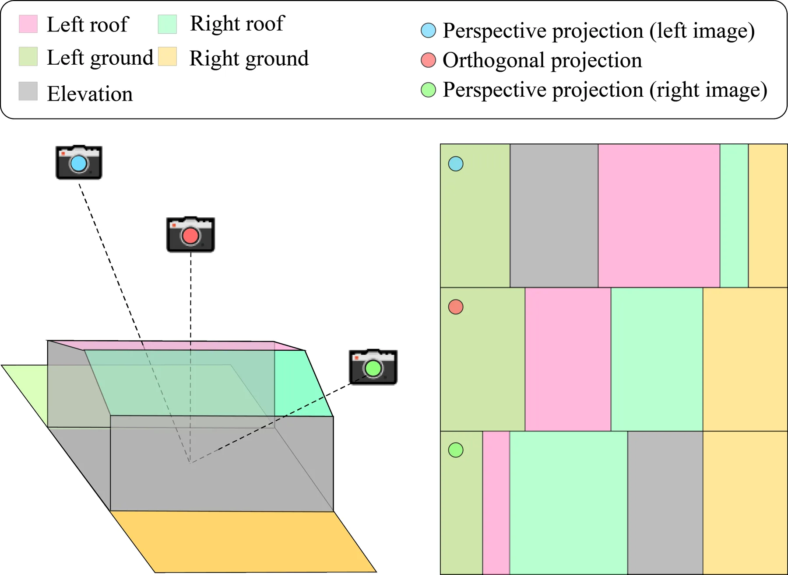
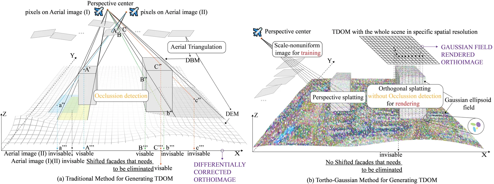
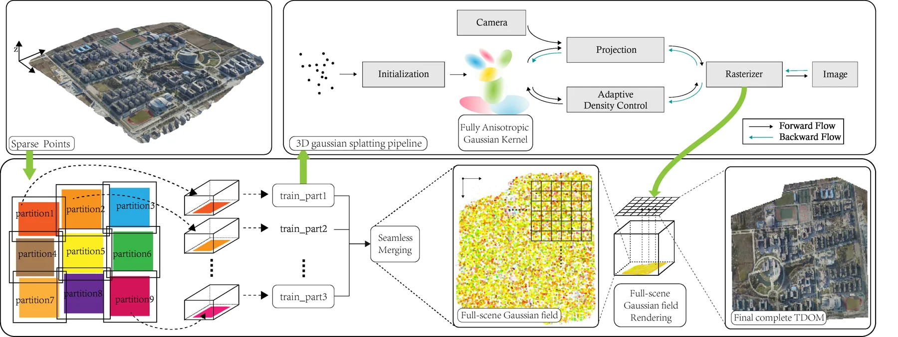
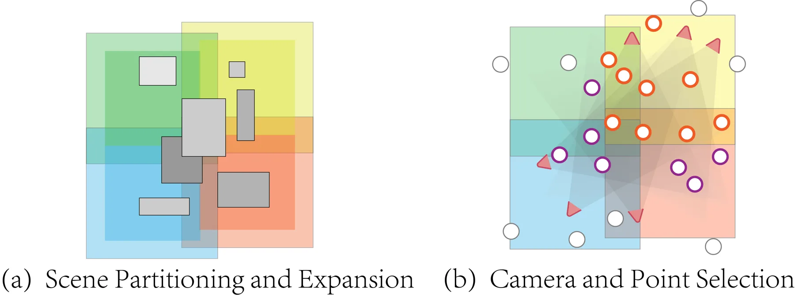
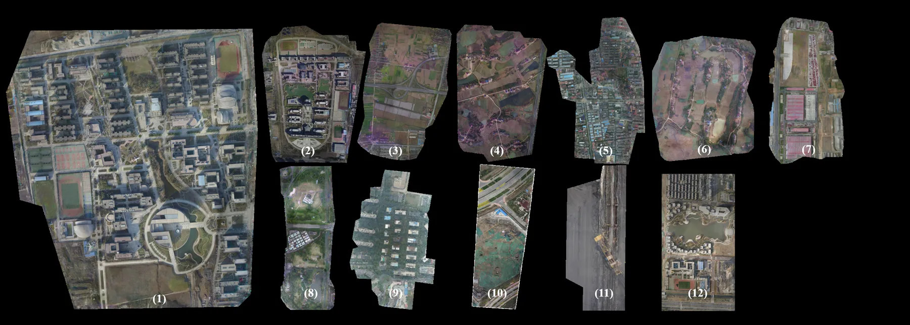
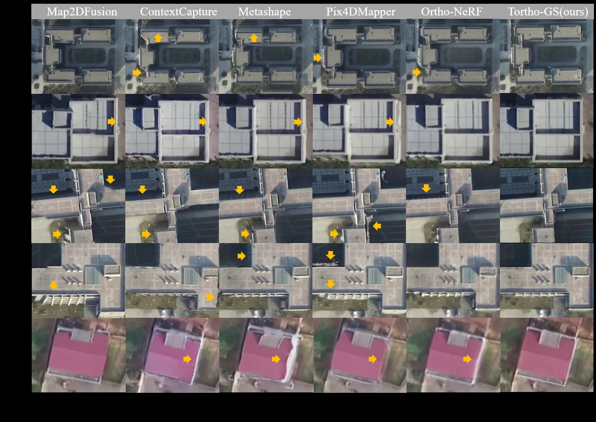

Tortho-Gaussian：用 3D Gaussian Splatting 生成真数字正射影像Tortho-Gaussian: Splatting True Digital Orthophoto Maps
与 3DGS、大规模城市重建、正射制图和数字孪生高度相关；工程问题明确，强调大尺度与传统摄影测量替代。
一句话工作总结
把 3DGS 改造成面向大范围城市正射产品的生成管线，是三维重建、遥感制图和数字孪生之间很值得跟踪的交叉工作。
摘要
真数字正射影像（TDOM）是数字孪生和 GIS 的重要产品，但传统摄影测量流程依赖 DSM、遮挡检测和复杂人工处理，在弱纹理、反光表面和建筑边界处容易退化。TOrtho-Gaussian 将 3D Gaussian Splatting 引入正射影像生成，通过各向异性高斯核的正交 splatting 直接生成 2D 正射视图，避免显式 DSM 和遮挡检测；同时采用分治策略支持大范围城市区域训练与渲染，并用全各向异性高斯核提升反光表面和细长结构质量。实验显示其在建筑边界精度、弱纹理区域和立面视觉质量上优于商业软件。
True Digital Orthophoto Maps (TDOMs) are essential products for digital twins and Geographic Information Systems (GIS). Traditionally, TDOM generation involves a complex set of traditional photogrammetric process, which may deteriorate due to various challenges, including inaccurate Digital Surface Model (DSM), degenerated occlusion detections, and visual artifacts in weak texture regions and reflective surfaces, etc. To address these challenges, we introduce TOrtho-Gaussian, a novel method inspired by 3D Gaussian Splatting (3DGS) that generates TDOMs through orthogonal splatting of optimized anisotropic Gaussian kernel. More specifically, we first simplify the orthophoto generation by orthographically splatting the Gaussian kernels onto 2D image planes, formulating a geometrically elegant solution that avoids the need for explicit DSM and occlusion detection. Second, to produce TDOM of large-scale area, a divide-and-conquer strategy is adopted to optimize memory usage and time efficiency of training and rendering for 3DGS. Lastly, we design a fully anisotropic Gaussian kernel that adapts to the varying characteristics of different regions, particularly improving the rendering quality of reflective surfaces and slender structures. Extensive experimental evaluations demonstrate that our method outperforms existing commercial software in several aspects, including the accuracy of building boundaries, the visual quality of low-texture regions and building facades. These results underscore the potential of our approach for large-scale urban scene reconstruction, offering a robust alternative for enhancing TDOM quality and scalability.
中文解读摘录
图表/页面预览
{kind=link}

{kind=link}

{kind=link}

{kind=link}

{kind=link}

{kind=link}
